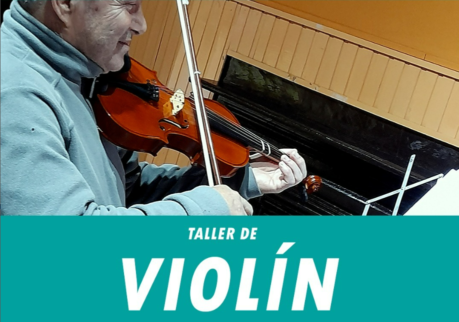
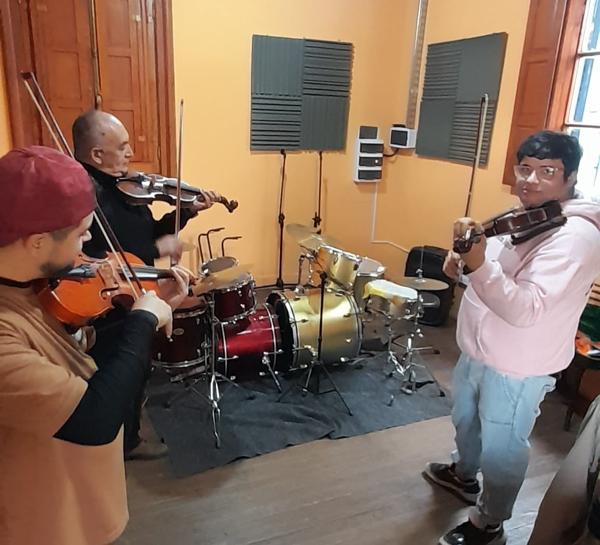
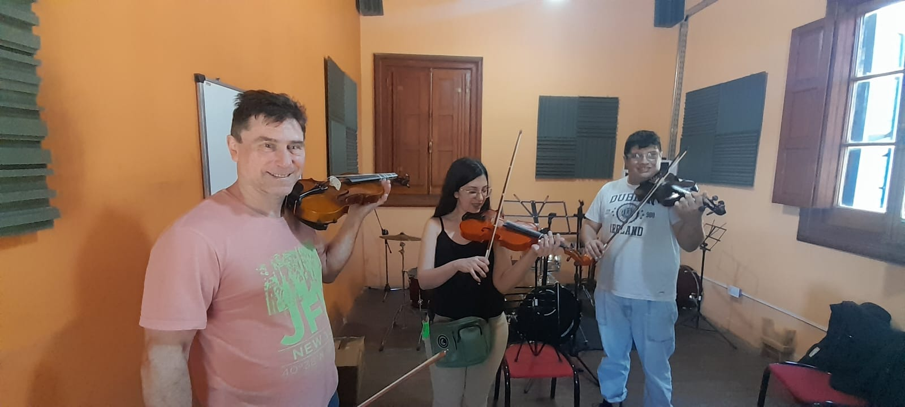
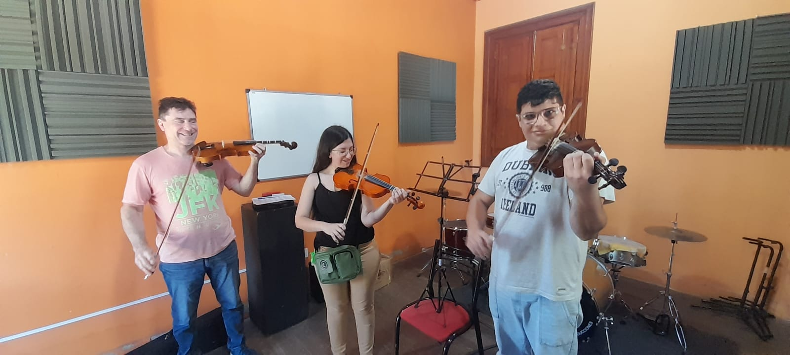

VIOLIN
Profesor: Bautista García
A PARTIR DE 16 AÑOS
Clases grupales de instrumento aprendiendo teoría musical. No se necesita conocimiento previo, ni hace falta tener el instrumento.




Clases grupales de instrumento aprendiendo teoría musical. No se necesita conocimiento previo, ni hace falta tener el instrumento.